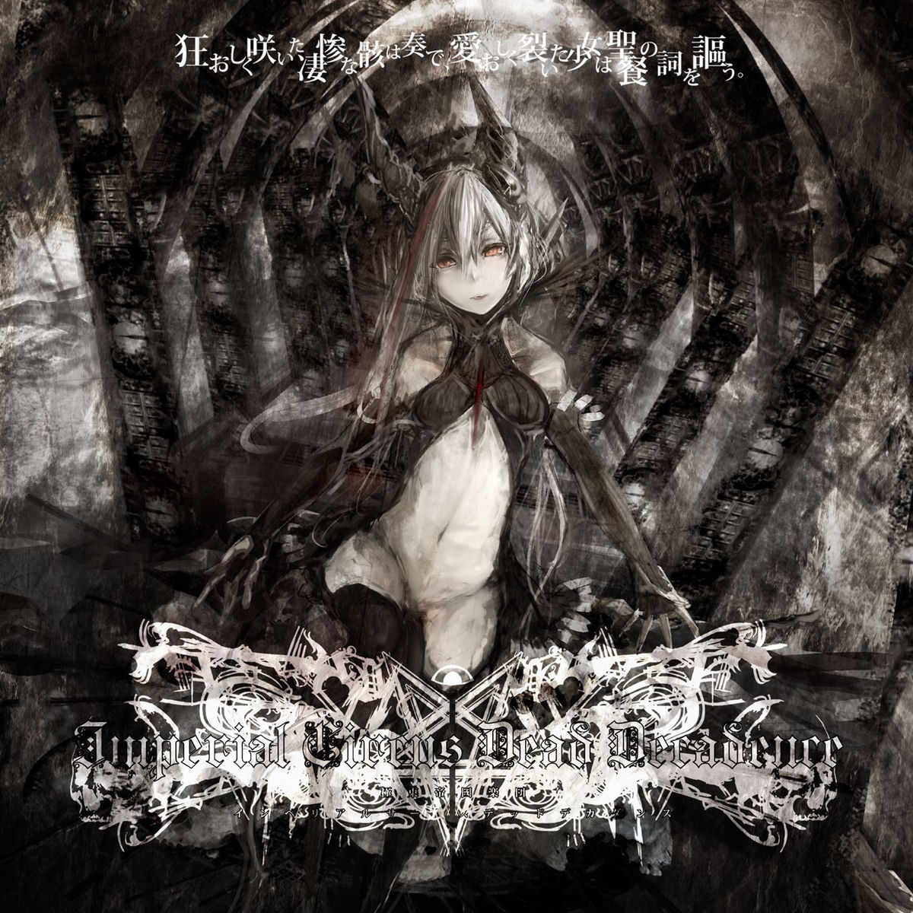

Discografia

Kuruoshiku Saita Seisan na Mukuro wa Kanade, Itooshiku Saita Shoujo wa Seisan no Uta wo Utau (2011)
Album
- 2008 - Sangeki no Chi ni Akaku Somatta Ai to Zetsubou no Kuroi Shi to ga Tsumugu Saigo no Monogatari
- 2011 - Kuruoshiku Saita Seisan na Mukuro wa Kanade, Itooshiku Saita Shoujo wa Seisan no Uta wo Utau
- 2022 - MOGARI――Shi e Fukeru Omoi wa Rikujoku Sura Kurai, Kanata no Sei wo Aisuru Tame ni Inochi wo Tataeru――